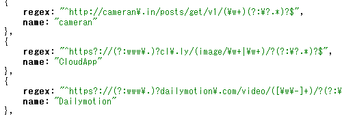

Welcome to img.azyobuzi.net !
img.azyobuzi.net is the best solution for accessing to the image posted on image sharing service. You can get images, thumbnails and originals, so that you can use it for various uses.
Features
- Regular Expressions
- 
- You can use regex patterns to process permalinks on your clients.
- Redirect Directly to the Image

- Specify a parameter of the URI, it redirect to the image, so that developers and others can use for rich clients, web, and so on easily.
- Three Different Sizes

- It provides three sizes, so that you can use widely, for example, thumbnails and lightboxes.
- Open Source Project

- We have released under the MIT License, so that you can make a similar service and a mirror site.
- azyobuzin/img.azyobuzi.net on GitHub
Get Started
Just add a few lines to your code, you can show thumbnails on your application.
It is easy to use it!
Read API document and start working.